Griferías.
Griferías de diseño para baños modernos y actuales. Grifos monomando, bimando o griferías termostáticas para lavabo, bidet, baño/ducha y cocina, con acabados en cromo, en acero, oro, platino, bronce, latón.
Griferías rústicas y a la par modernas, diseñadas bajo premisas de eficiencia ecológica y energética, con el objetivo de potenciar el ahorro de agua; grifos electrónicos, junto con columnas de ducha y paneles integrados con función de rayos uva.
La selección de marcas de griferías que te proponemos es realmente amplia, y está basada en criterios estéticos, de calidad, de tamaños y funcionalidades diferentes, y también en ofrecerte gran diversidad de precios.
Podrás encontrar aquel modelo de grifo para baño y cocina que necesitas, y siempre de la mano de los principales fabricantes nacionales e internacionales…
Marcas en el showroom
- Axor
- Dornbracht
- Fantini
- Gessi
- Hansgrohe
- Samuel Heath
- Zucchetti Kos
Y si lo que buscas no está en exposición, lo buscamos en la Bagnoteca.
Novedades 202646

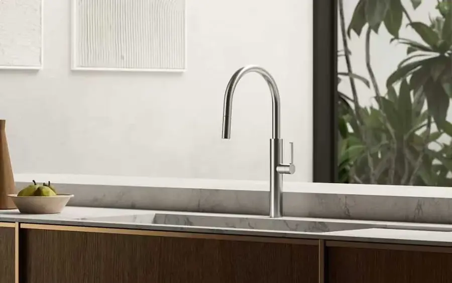
GriferíasAdelgazar una grifería de cocina casi siempre significa perder mecanismo
El cartucho necesita espacio. El diseño quiere lo contrario.
Andreucci y Hoisl firman la solución para Fantini: un cartucho más pequeño que permite reducir el grosor sin tocar la funcionalidad.

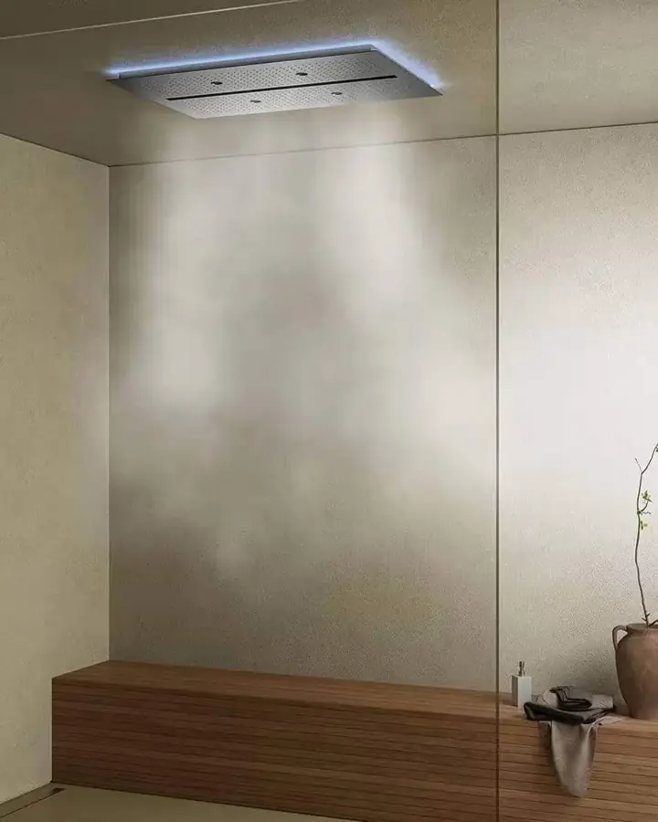
Griferías¿Cuántos sistemas distintos hacen falta para combinar agua, aroma y sonido en una ducha?
Normalmente, cada sensación depende de una instalación independiente, difícil de coordinar y de mantener.
Uno solo, según la nueva colaboración entre Fantini y el Grupo Hofer, especialista en soluciones de spa:

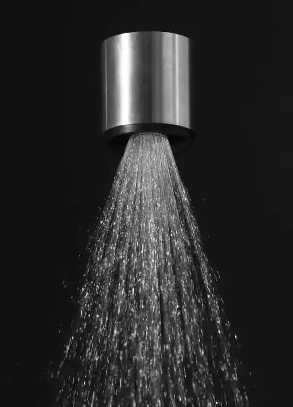
GriferíasUn sistema de ducha modular con cinco tipos de chorro. Cada uno hace una cosa distinta
Lluvia envolvente, bruma ligera, flujo tipo cristal, hoja y chorro energizante. No son variaciones del mismo gesto, son experiencias distintas dentro del mismo espacio.
Bar59 de Zucchetti es una de las novedades que nos ha llamado la atención.
Elementos cilíndricos y planos en acero inoxidable AISI 316L que se configuran según lo que necesitas. Múltiples acabados, y una flexibilidad que permite adaptarlo a casi cualquier espacio.
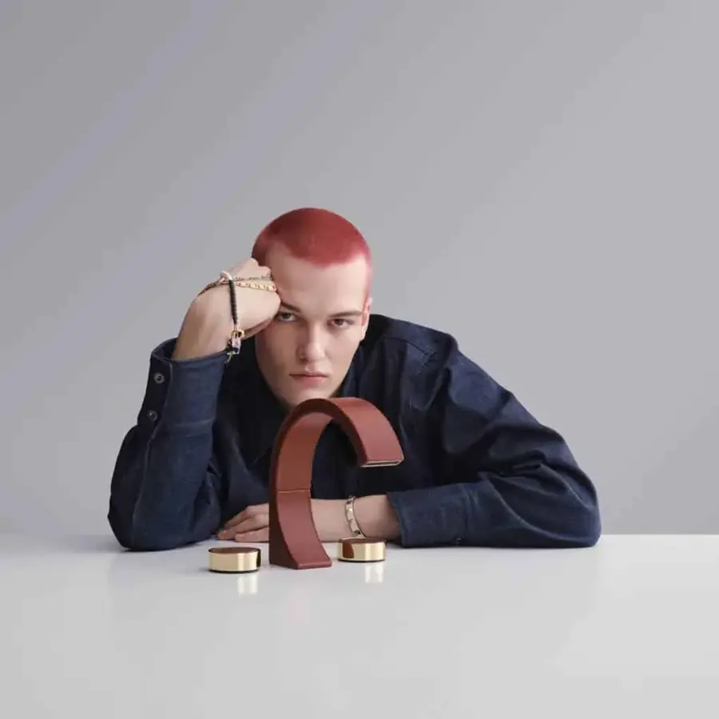
GriferíasGrifería diseñada desde cero para encajar en tu espacio
Lo habitual es adaptar el espacio a lo que hay en el mercado.
Atelier de Dornbracht invierte esa lógica: proporciones, funciones, acabados, texturas, tonalidades y mandos se definen según lo que el espacio necesita.
Es una novedad que va más allá del catálogo.
Para los espacios más exigentes incluso incorpora opciones de identidad: grabados y piezas exclusivas que no existen en ningún otro sitio.
- Griferías
Grifería personalizable Balcoon – Duravit
Diseñada por Patricia Urquiola, esta grifería combina una estética purista con un marcado carácter arquitectónico.
Permite elegir instalación vista o empotrada y ofrece tres acabados —cromo, negro mate y acero cepillado— para ampliar la personalización.
La colección incluye distintas alturas y proporciones para adaptarse a cada lavabo, manteniendo coherencia formal en todo el baño.
El grifo exento de bañera actúa como pieza escultórica que refuerza la identidad cálida y contemporánea de la serie.
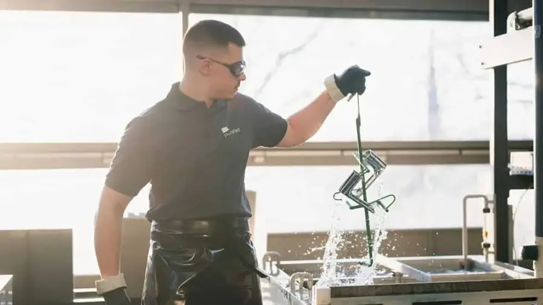
GriferíasGriferías ReCrafted – Dornbracht
ReCrafted de Dornbracht plantea una vía de circularidad aplicada a griferías de alta gama, recuperando piezas originales y llevándolas a un proceso de reacondicionamiento.
Cada unidad se desmonta, se revisa técnicamente y se somete a un nuevo acabado —pulido manual, galvanizado y sustitución de componentes funcionales— antes de superar controles de calidad.
El resultado mantiene el diseño y la precisión mecánica originales, pero emitiendo una huella de CO₂ muy inferior.
Para proyectos premium, que buscan sostenibilidad sin renunciar a estética ni durabilidad, es una alternativa especialmente sólida.
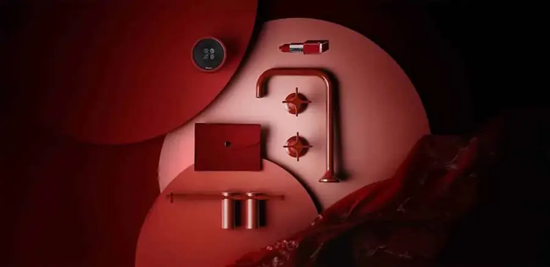
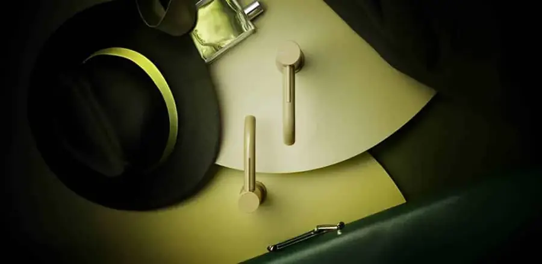
GriferíasQue la grifería desentone del resto del espacio no debería ser inevitable
La mayoría de las griferías obligan a que todo lo demás se adapte a un catálogo cerrado de acabados.
Con más de 2.000 tonos disponibles mediante el sistema NCS®, la Color Collection de Ritmonio da la vuelta a esa lógica: las series Diametro35 se ajustan en mate o brillo a la paleta exacta del espacio, y no al revés.
¿Tienes un espacio donde el color es la clave? Hablamos de opciones.
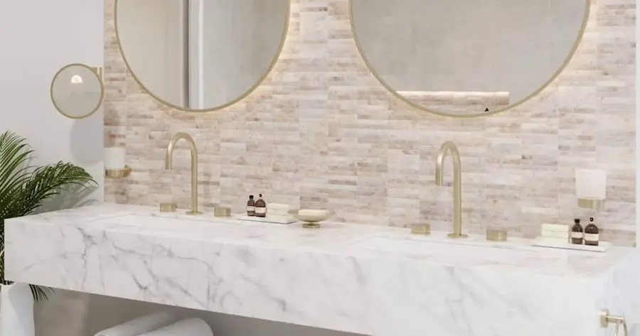
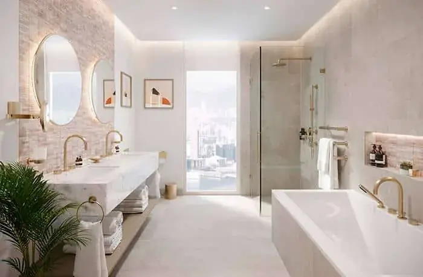
Griferías¿Qué hace que un baño de hotel se recuerde y no se olvide?
Casi nunca es el tamaño. Es el detalle que nadie más se ha molestado en cuidar.
THG Paris lo tiene claro en Yoko: seis modelos de grifería que combinan el frío del metal con el calor del mármol, pensados para hostelería y residencial de lujo.
Si trabajas en espacios de este nivel, te enseñamos la gama completa.
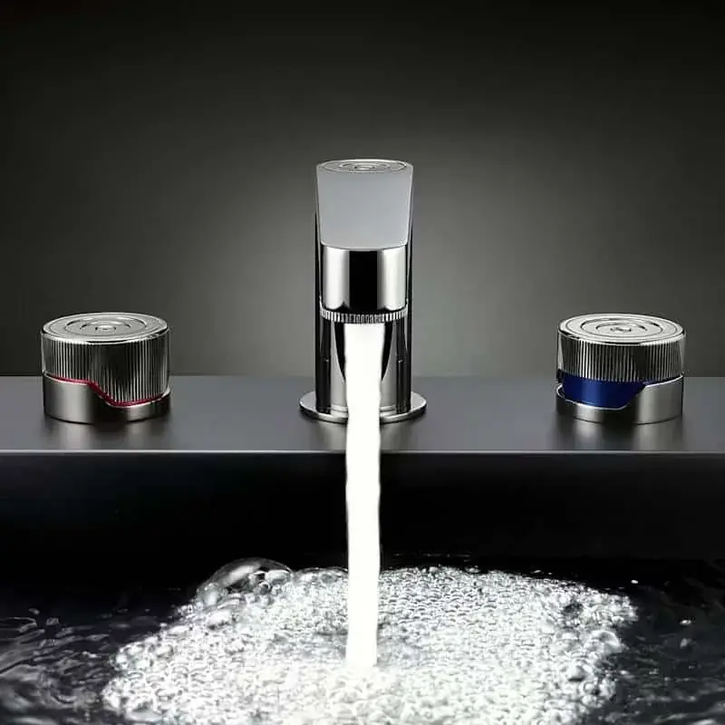
GriferíasGriferías para baño Zoom – THG Paris
Bajo la dirección del reconocido arquitecto francés Jean-Michel Wilmotte nace “Zoom”, surge la rompedora propuesta de griferías para baño en THG Paris.
Con grandes referencias al mundo de la fotografía, esta nueva colección captura la esencia de la exactitud y realza la belleza de sus piezas mediante líneas y formas geométricas.
Cada uno de sus grifos ha sido diseñado con el mismo cuidado en los detalles que una cámara fotográfica. El resultado es una colección de primera calidad, elegante y atemporal que transformará tu baño en un espacio lleno de personalidad.
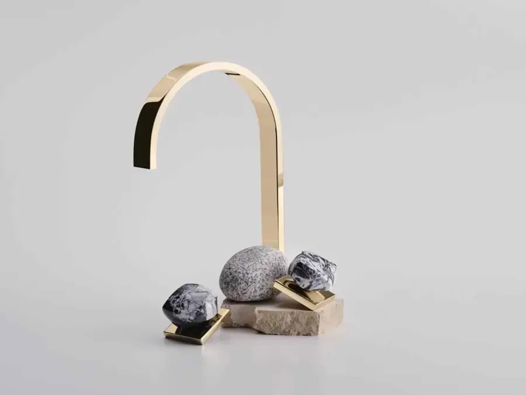
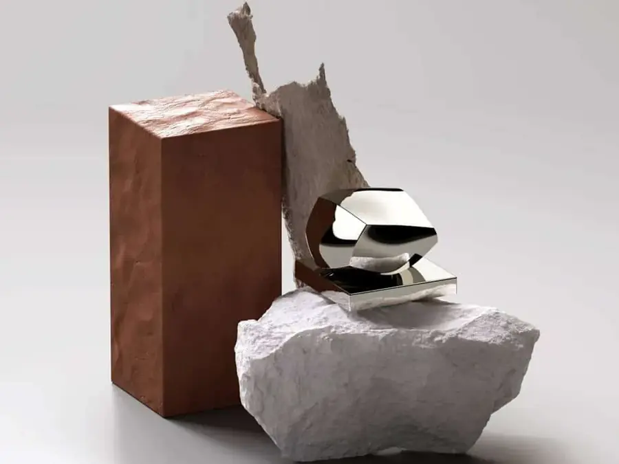
GriferíasGrifería minimalista para baño Atelier Editions “The Rock” - Dornbracht
Sistema de grifería para baño basado en la serie MEM, reinterpretado mediante manillas con geometrías irregulares que simulan piedra tallada.
Fabricadas en metal macizo mediante mecanizado y acabado manual, cada pieza es tratada de forma individual y el resultado es único.
La colección permite personalización completa: las manillas pueden producirse en metal o piedra natural según especificación del proyecto, combinándolo con distintos caños de la marca.
Pieza protagonista en para baños que buscan identidad, detalle y diferenciación.
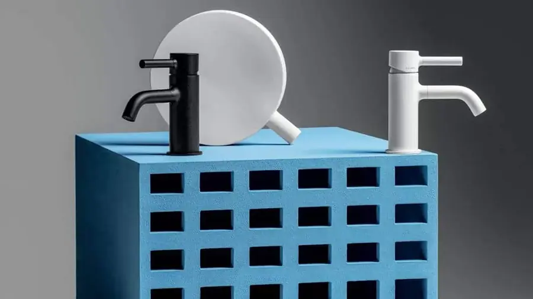
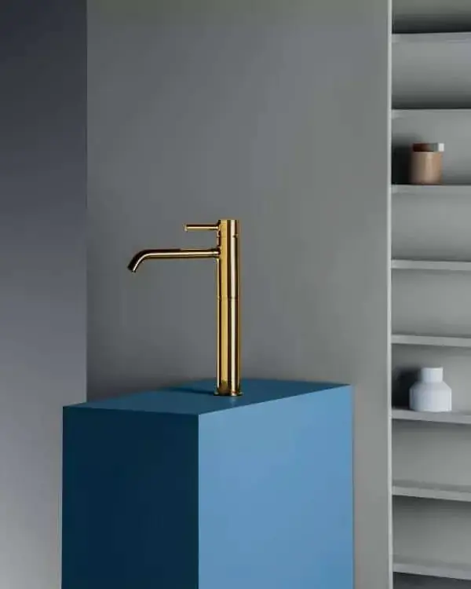
GriferíasGriferías para baño monomando Pan - Zucchetti&Kos
Pan destaca por su diseño de grifería monomando cilíndrica que evita cualquier corte o soldadura visible, logrando una conexión orgánica y fluida entre el cuerpo, el caño y la palanca.
Este enfoque de «unión natural» inspirada en los troncos de los árboles ofrece una estética pulcra y atemporal, ideal para baños minimalistas o de diseño escandinavo.
La ausencia de juntas complejas facilita la limpieza y reduce puntos de acumulación. Una pieza que eleva la calidad visual del lavabo mediante una forma esencial y constructiva impecable.
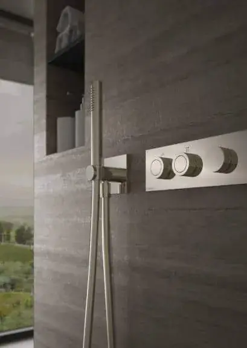
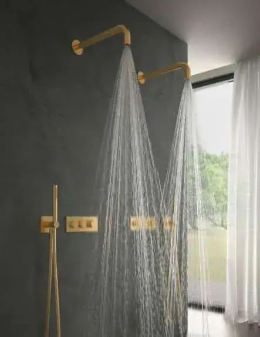
GriferíasGrifería de ducha W-Smart - Rubinetterie Treemme
W-Smart revoluciona el control de ducha con su innovador sistema “presiona y ajusta”.
Su mecanismo ofrece un manejo rápido del caudal (presionar) y ajuste preciso de la temperatura (girar), garantizando precisión y comodidad.
Con versiones mecánica y termostática, así como configuraciones de 2 o 3 vías, se adapta a diseños de ducha personalizados.
Su estética minimalista potencia una integración armónica con rociadores modernos, convirtiéndose en un recurso versátil para proyectos que buscan unir tecnología, ergonomía y elegancia.
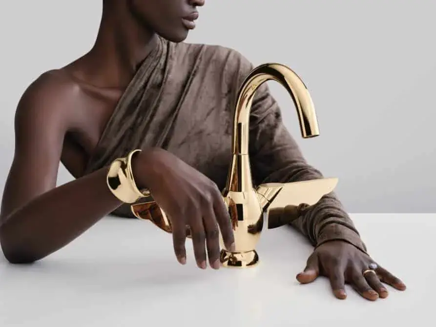
GriferíasGriferías a medida Atelier – Dornbracht
Atelier es la línea más personalizada de Dornbracht: una solución de grifería técnica hecha a medida desde una sola pieza.
Como si se tratara de un proyecto de artesanía, permite ajustar acabados, dimensiones, funciones, grabados, materiales o manetas para proyectos que exigen identidad exclusiva y coherencia absoluta con la visión del arquitecto.
No existen mínimos de pedido ni límites creativos: Atelier es ideal para diseños singulares, donde cada grifería refleja con precisión el lenguaje estético de cada proyecto.
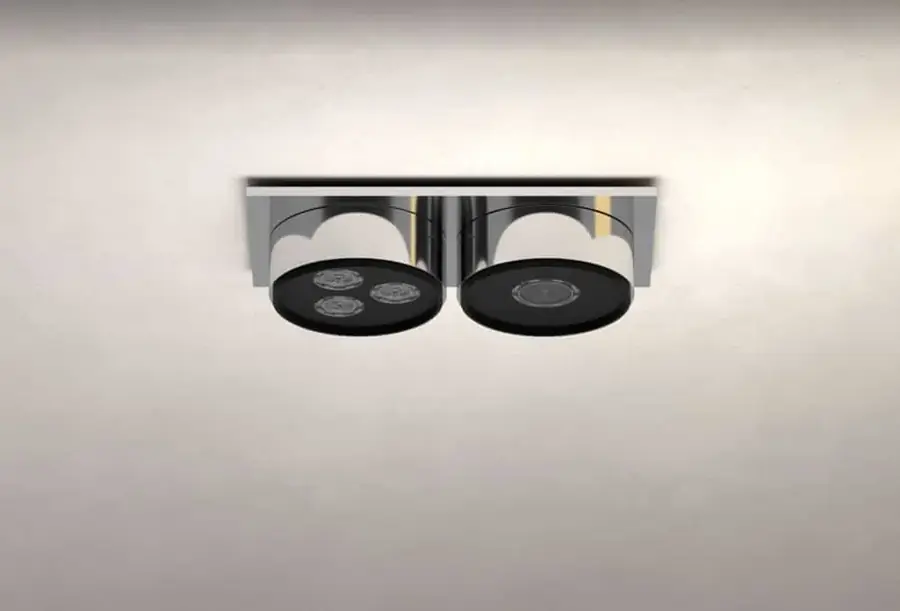
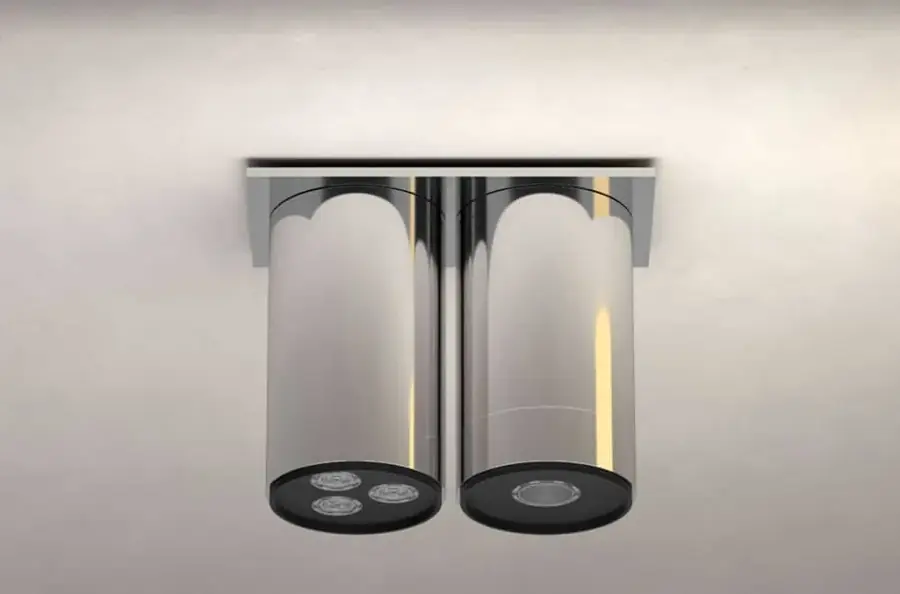
GriferíasGriferia Bar 59 – Zucchetti
Sistema modular de ducha diseñado por Matteo Fiorini con Studio Lys en acero inoxidable.
El proyecto parte de una lectura funcional del espacio y se constituye a partir de cuerpos cilíndricos y planos combinables entre sí.
Todas sus tipologías de chorro y dimensiones son configurables adaptándose a los requerimientos técnicos y estéticos del proyecto.
La colección está disponible en varios acabados permitiendo la customización total de cualquier ducha. Recomendable para proyectos exigentes que buscan un diseño dinámico y genuino.
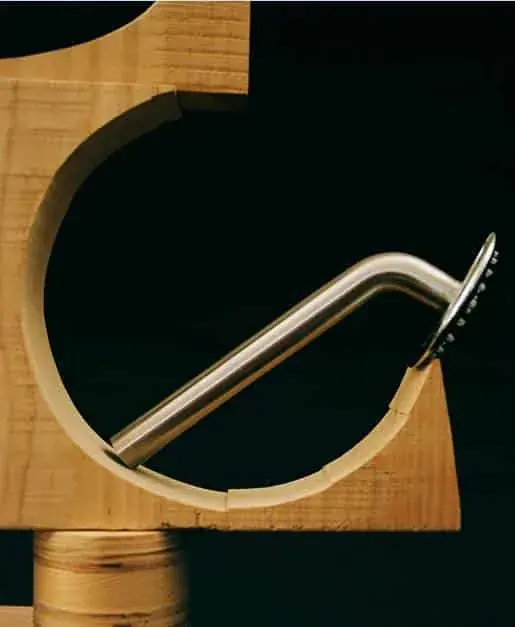
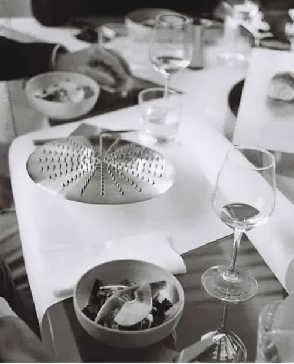
GriferíasGrifería para ducha Ellissea - Zucchetti
Nueva línea de rociadores para ducha en acero inoxidable, fruto de una colaboración entre Alberto y Francesco Meda.
Ellissea parte de una geometría elipsoidal girada que optimiza el flujo del agua y mejora la eficiencia de distribución.
Su diseño genera un volumen en forma de cono, con base circular, aparentemente limpio y visualmente distintivo.
La construcción en acero garantiza durabilidad en entornos de alta exigencia, mientras que su lenguaje sobrio permite su integración en proyectos de baño contemporáneos de alto nivel.
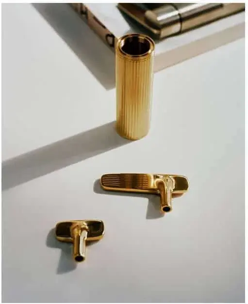
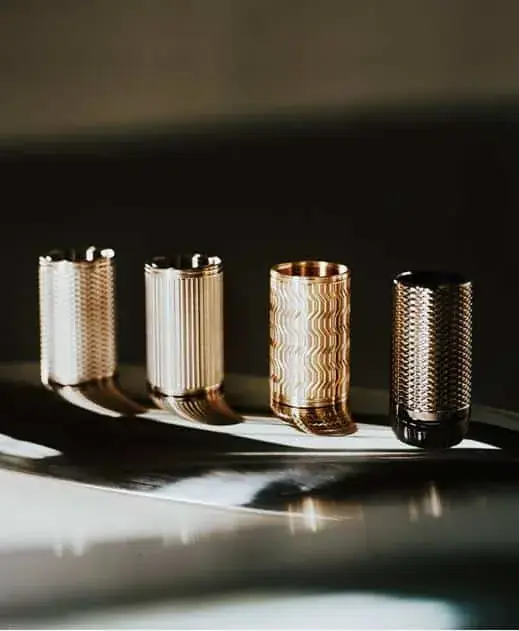
GriferíasGriferia de baño Veloce de latón cromado – Zucchetti
Colección de grifería de latón cromado diseñada por Yabu Pushelberg para Zucchetti con formas inspiradas en la ingeniería de los años 30.
Disponible en versiones monomando y de tres orificios, se caracteriza por su equilibrio formal y precisión geométrica, con grandes referencias a la velocidad de los automóviles de la época.
Sus precisas proporciones y diseño escultórico hacen de Veloce una solución versátil para proyectos que buscan integrar grifería como elemento arquitectónico en espacios de inspiración clásica
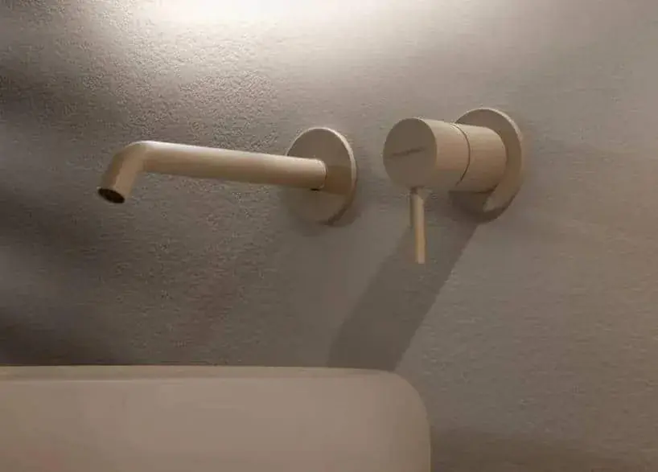
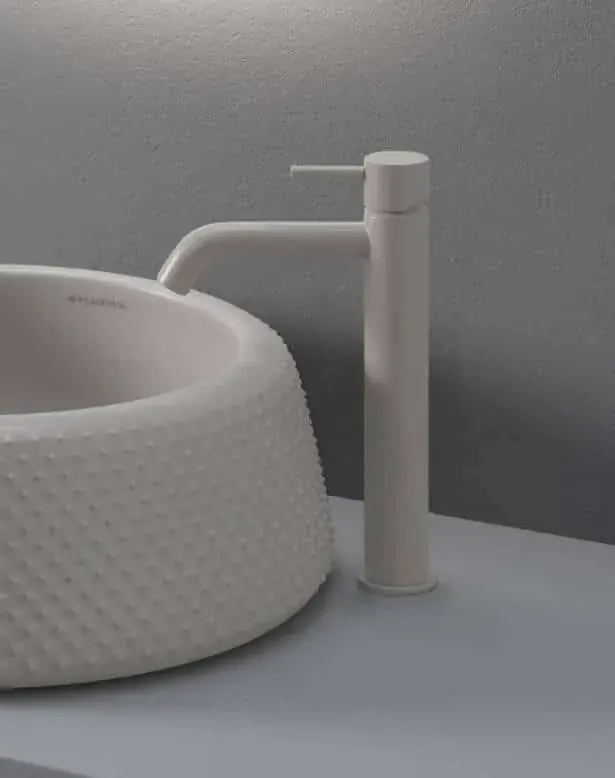
GriferíasGrifo para baño Look - Flaminia
Flaminia amplía su catálogo con una nueva línea de grifería en latón lacado, “Look”.
De estética minimalista y líneas depuradas, se presenta en acabados mate Argilla, Latte y Carbone, favoreciendo combinaciones cromáticas con el resto de la oferta cerámica de la marca.
Grifería para duchas, opciones monomando para lavabos en pared o sobre encimera, todas sus piezas se conciben como una solución versátil y transversal, adecuada para todo tipo de proyectos.
Una propuesta que garantiza resistencia y durabilidad a largo plazo.
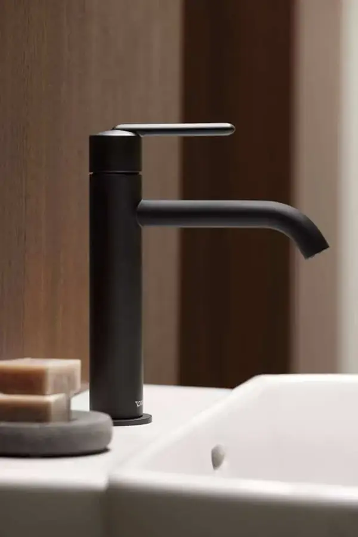
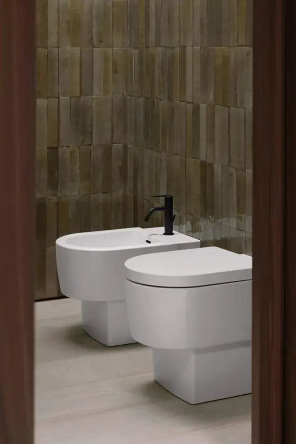
GriferíasGrifería Balcoon – Duravit
Grifería a juego del resto de la colección Balcoon para baño. Con diseño ergonómico en forma de maneta cilíndrica en versiones empotradas o de superficie para lavabo, bidé, ducha o bañera.
Ideal para proyectos sostenibles, sus funciones Fresh Start y Minus Flow convierten los grifos monomando en soluciones que ahorran agua y energía.
Una línea pensada en tonalidades tierra para armonizar cualquier propuesta de interiorismo, disponible en tres tamaños y acabados premium-cromo, negro mate y acero inoxidable cepillado.
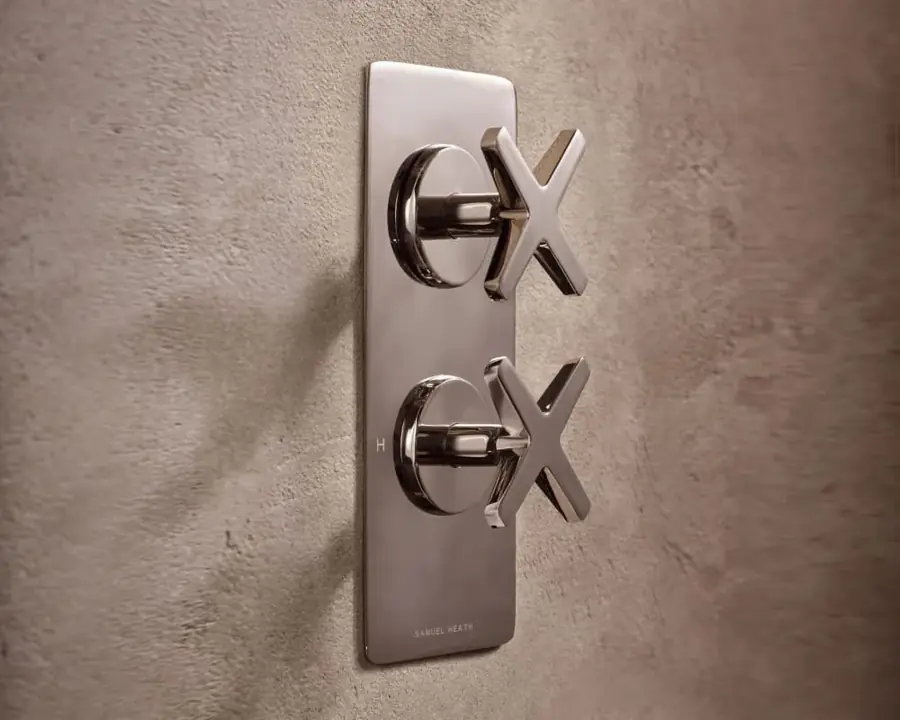
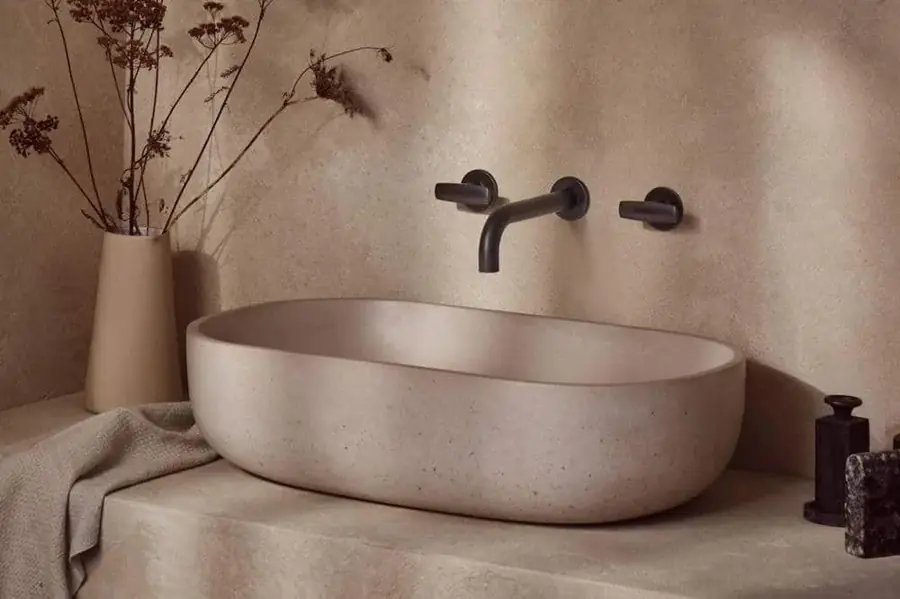
GriferíasGrifería ecológica Classic Forme Collection – Samuel Heath
Samuel Heath presenta su propuesta de grifería más ecológica. Una extensa línea de accesorios y duchas, de estética clásica, que brinda un toque de diseño y exclusividad al baño desde la simplicidad.
Para esta colección, el diseñador recupera los guiños más característicos del movimiento Art Decó, plasmándolo en piezas de diseño con perfiles estilizados y sobrios.
Fieles a la manera de hacer de la casa, Classic Forme Collection nace tras un refinado proceso de fabricación artesanal en el que el latón se ha escogido como material protagonista.
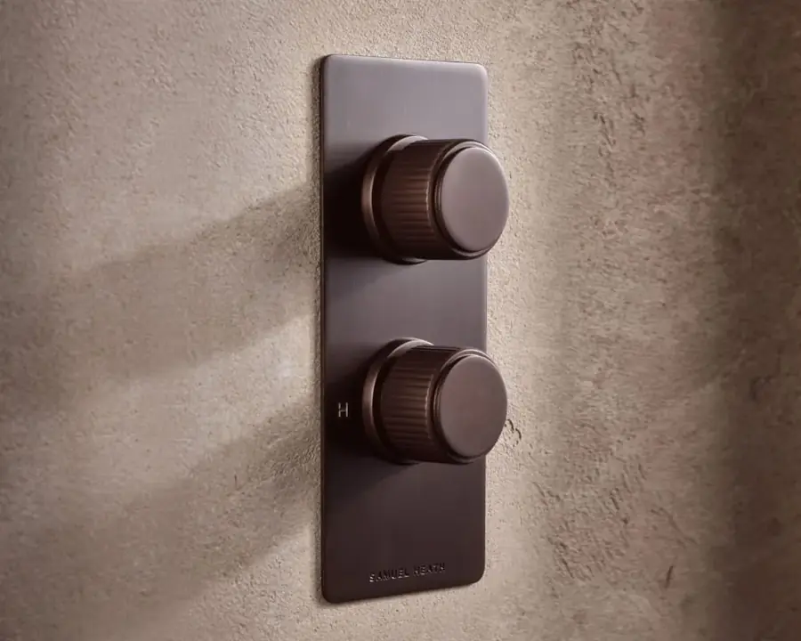
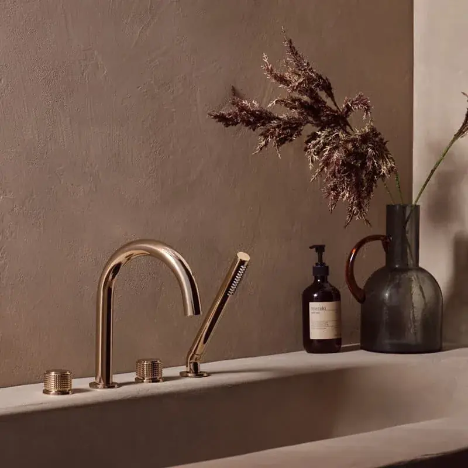
GriferíasGrifería minimalista Oriel Forme Collection – Samuel Heath
Oriel Forme de Samuel Heath recrea el minimalismo desde un perspectiva elegante. Su grifería y complementos en latón exhiben líneas puras y sofisticadas, una colección que incluye cuatro diseños distintos que interactúan con la luz y su textura.
Groove y Bay destacan por sus grabados geométricos, Tab aporta suavidad con su inspiración modernista y Pyramid deslumbra con un patrón facetado de gran profundidad visual. Cada pieza refleja la maestría artesanal y el compromiso con la sostenibilidad, uniendo diseño y funcionalidad en una perfecta armonía.
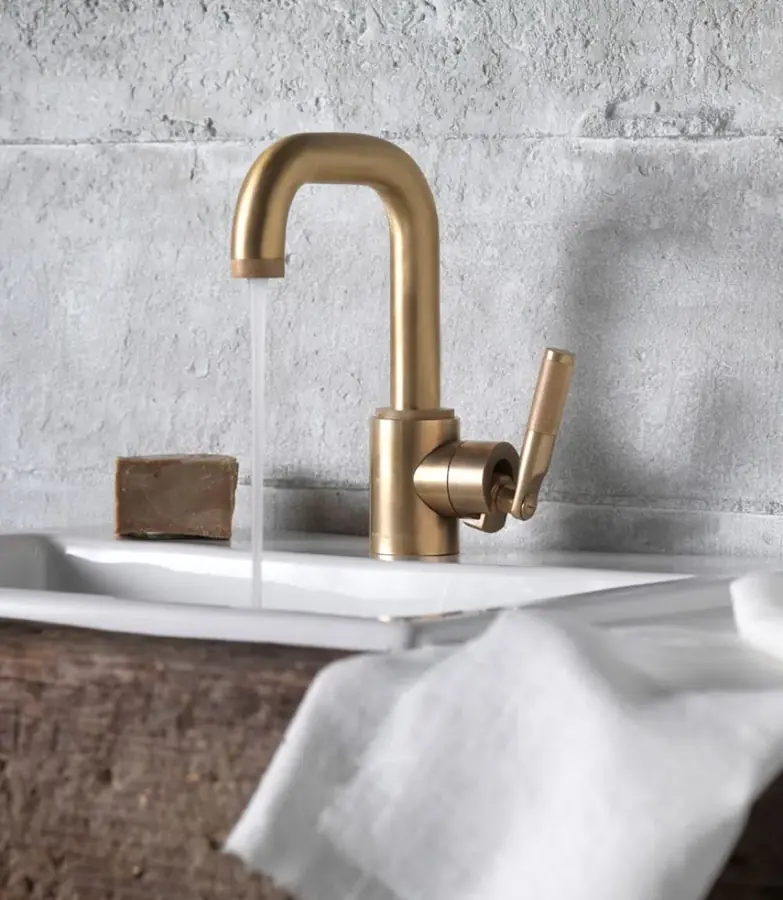
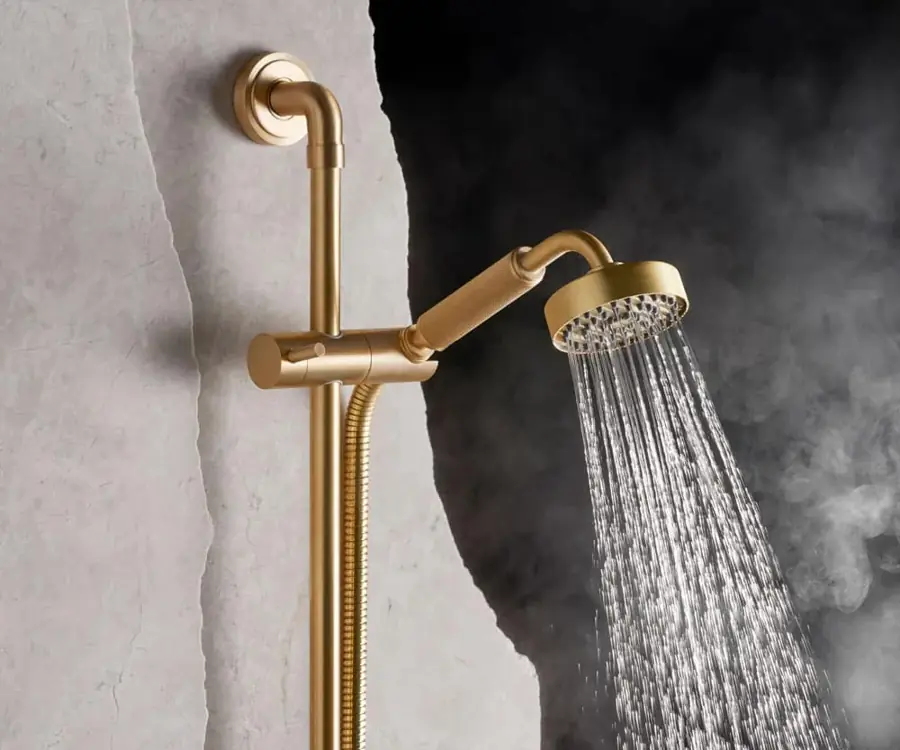
GriferíasGrifos Estilo Bauhaus Landmark Industrial Collection – Samuel Heath
Landmark Industrial de Samuel Heath, presenta su nueva propuesta de grifería para baños. Una colección atemporal que celebra la estética funcional de la Bauhaus con un enfoque moderno y rompedor disruptivo.
Su diseño fusiona detalles mecanizados, que aportan precisión, con una cuidada elección de acabados disponibles, alcanzando una armonía entre lo industrial y lo elegante. Cada elemento muestra la maestría artesanal de la firma y la innovación en los materiales, ofreciendo una combinación singular de utilidad y diseño.
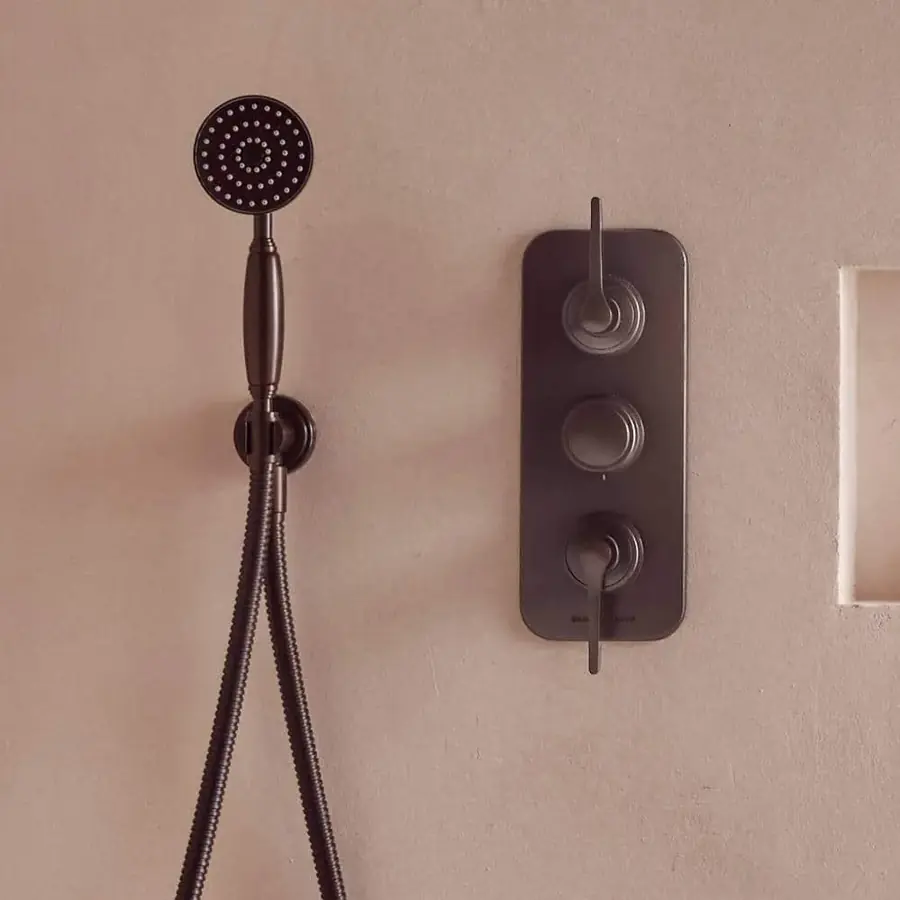
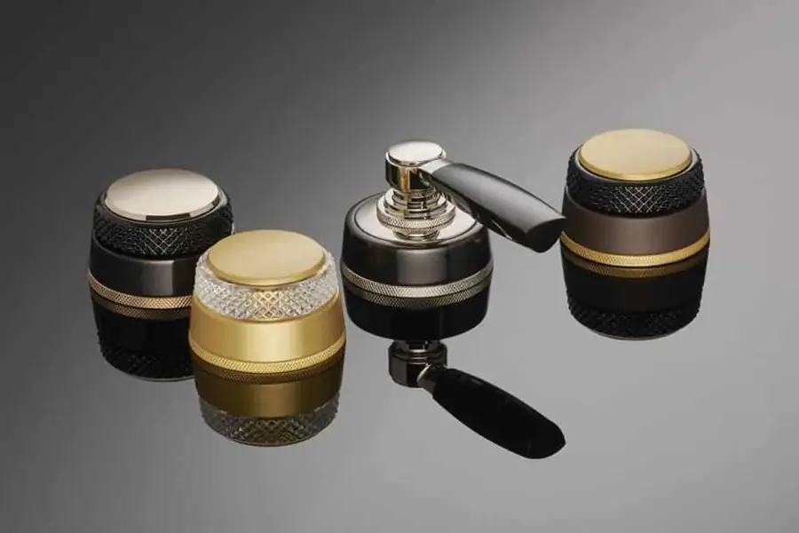
GriferíasGriferia para baño One Hundred Collection – Samuel Heath
La marca de referencia en colecciones para baños de lujo, Samuel Heath, presenta al mercado su exclusiva gama de grifería One Hundred.
Con un guiño directo a sus raíces, la colección consigue plasmar en sus piezas la auténtica esencia de la estética británica. Diseños sofisticados, con detalles clásicos y refinados, fabricados con materiales de altas calidades y de forma artesanal.
One Hundred incluye cabezales de ducha, toalleros, porta jabones, agarraderos y otros accesorios. Una colección de lo más completa para otorgar personalidad al baño.
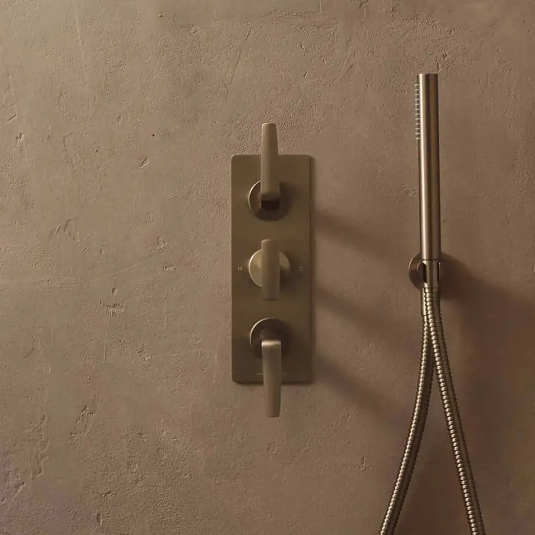
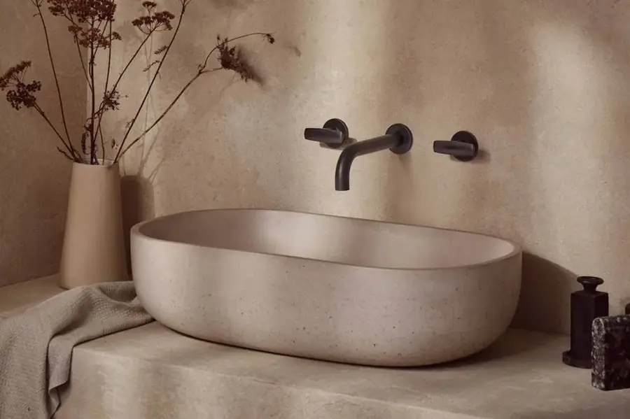
GriferíasGrifo para baños y duchas Speed Forme Collection – Samuel Heath
Samuel Heath amplía su catálogo con Speed, una nueva línea de grifería para baños y duchas dentro de la serie Forme.
Con un diseño que encarna el minimalismo, Speed combina líneas esbeltas y perfiles curvados en un conjunto elegante y funcional. Disponible en varios formatos y acabados, su ergonomía permite un manejo preciso y cómodo.
Una fusión entre estética contemporánea y artesanía fabricada mediante un proceso optimizado que reduce el uso de metales preciosos y minimiza el impacto ambiental.
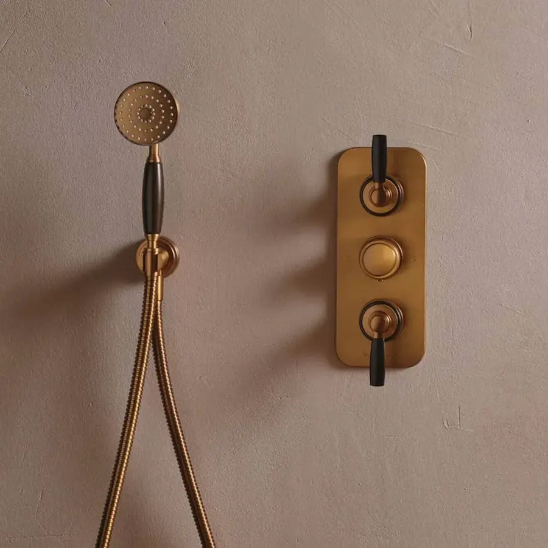
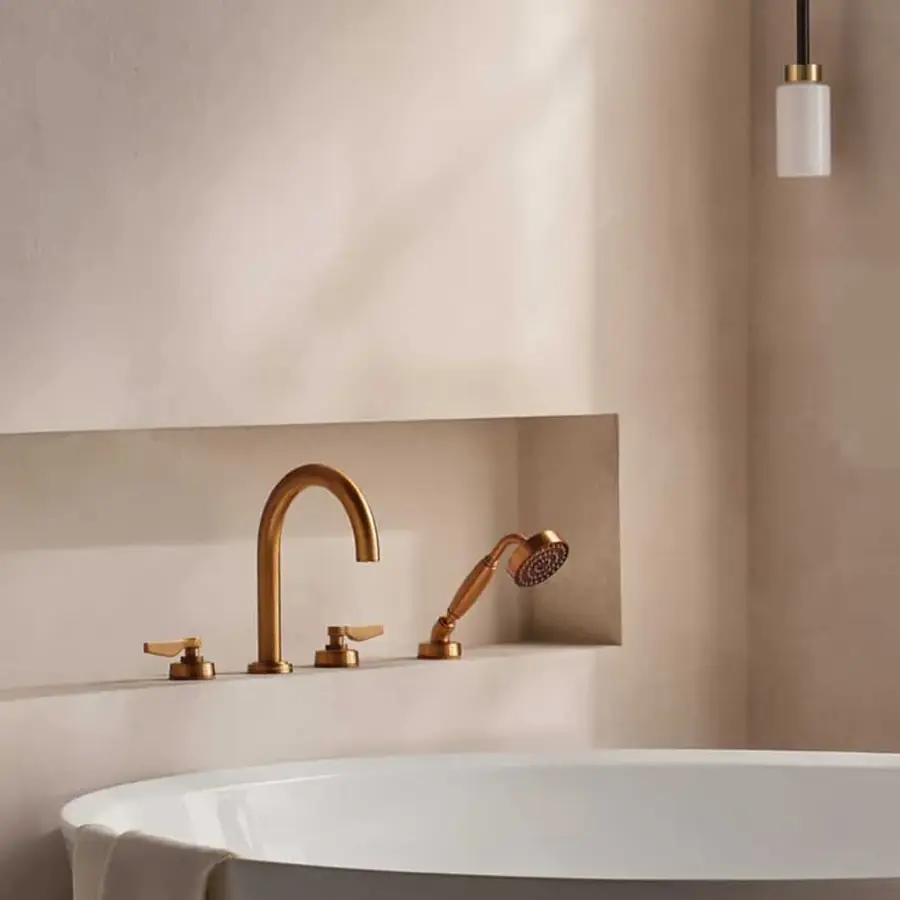
GriferíasGriferia de baño One Hundred Luxe Collection – Samuel Heath
Samuel Heath presenta su colección de grifería más especial, “One Hundred Luxe Collection”. Una serie de accesorios para baño inspirada en su origen británico y la estética, clásica y glamourosa, que tanto caracteriza a esta sociedad.
Con un diseño tradicional, aunque romantizado y en armonía con las nuevas tendencias, One Hundred lleva el nombre de la dirección de su fábrica. Una fábrica que apuesta por técnicas artesanales para la fabricación de sus piezas, con los mejores materiales, referente desde 1850.
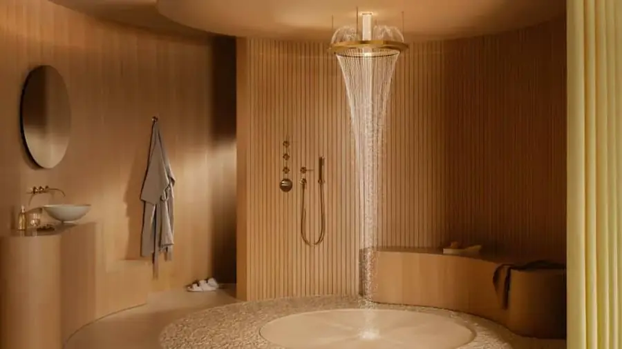
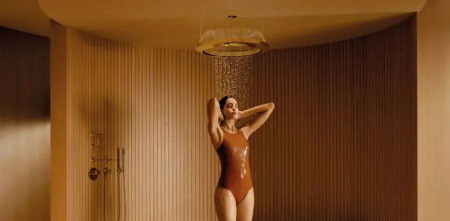
GriferíasEscultural ducha multifuncional Aquahalo - Dornbracht
Aquahalo de Dornbracht convierte la ducha en un objeto de arte arquitectónico. Su escultural diseño anular, inspirado en una lámpara de araña, fusiona elegancia e innovación para brindar una experiencia de lujo sensorial inigualable.
“Como si del cielo cayeran diamantes líquidos”, estas son las palabas que su diseñador Michael Neumayr utiliza para describir su creación. Con una extraordinaria fluidez de agua en forma circular, se forma un santuario que permite un momento de calma y descanso terapéutico.
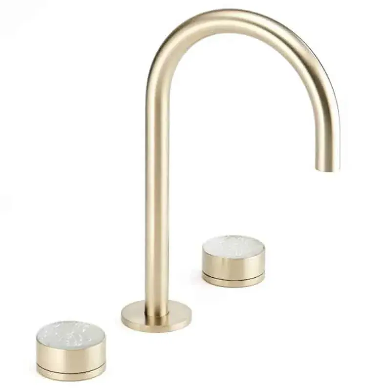
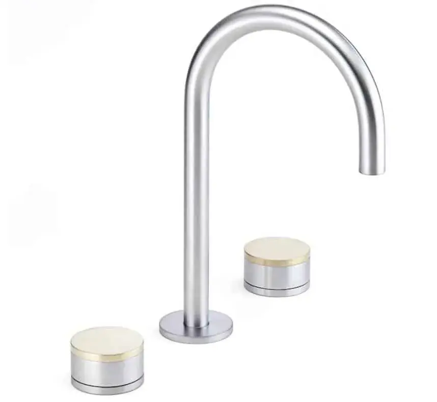
GriferíasGriferías de lujo para baño Yoko – THG Paris
La marca de grifería francesa líder en ambientes de lujo presenta su más reciente gama de griferías, diseñada para baños de hoteles y áreas residenciales.Inspirada en los baños de alto standing, la colección brinda una estética atemporal que se adapta a cualquier estilo. Yoko ofrece 6 modelos de grifos, que oscilas entre el frío resplandor del metal y el calor del mármol, proporcionando un matiz de distinción a cualquier proyecto de interiorismo.
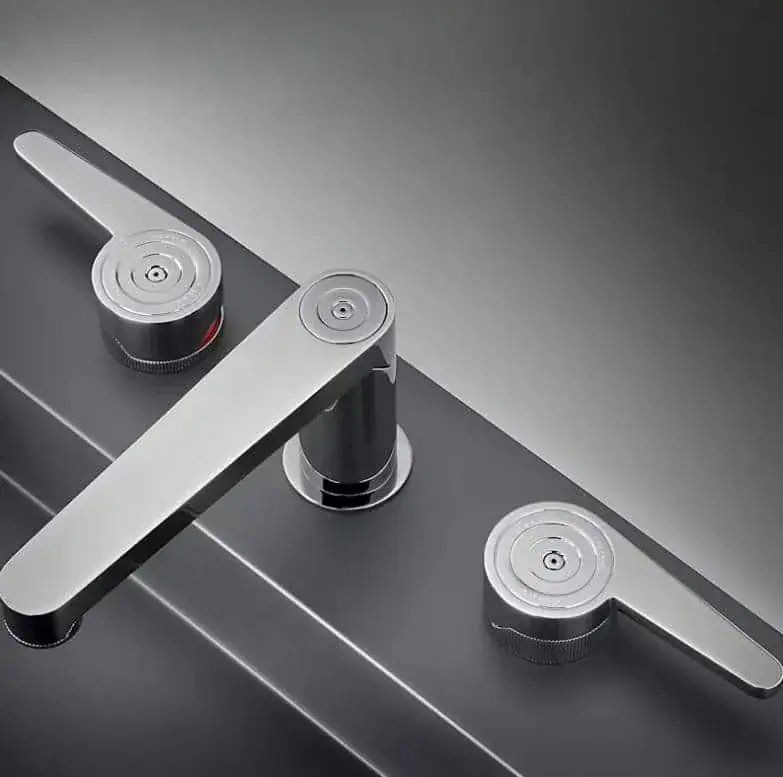
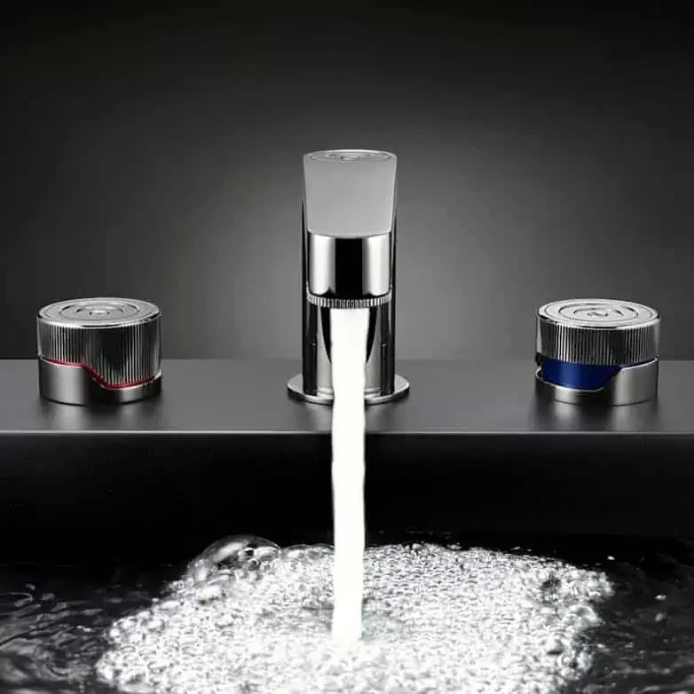
GriferíasGriferías para baño Zoom – THG Paris
Bajo la dirección del reconocido arquitecto francés Jean-Michel Wilmotte nace “Zoom”, surge la rompedora propuesta de griferías para baño en THG Paris.
Con grandes referencias al mundo de la fotografía, esta nueva colección captura la esencia de la exactitud y realza la belleza de sus piezas mediante líneas y formas geométricas.
Cada uno de sus grifos ha sido diseñado con el mismo cuidado en los detalles que una cámara fotográfica. El resultado es una colección de primera calidad, elegante y atemporal que transformará tu baño en un espacio lleno de personalidad.
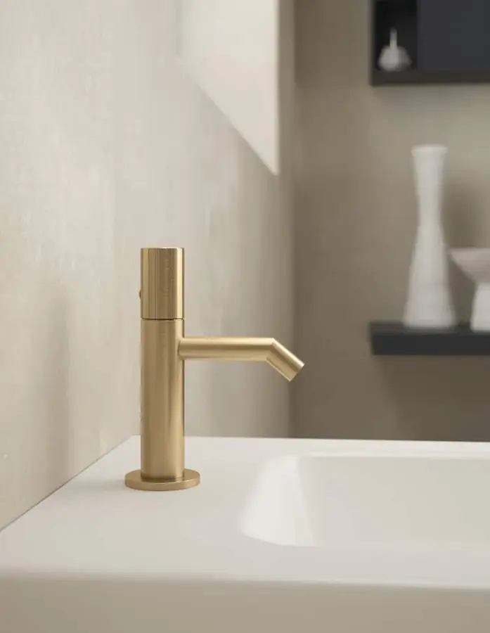
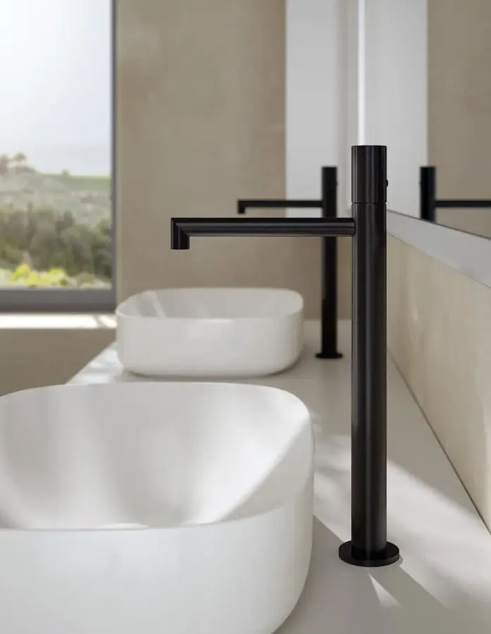
Griferías28mm Grifería para baño – Rubinetterie Treemme
La firma italiana presenta como novedad la colección 28mm de grifería para baño. De la mano del ingeniero Giampiero Castagnoli y el diseñador italiano Marco Pisati, esta gama de grifos se caracteriza precisamente por el tamaño que le da nombre.
Compuesta por un cilindro en acero de tan solo 28 milímetros de diámetro, es todo un avance en cuanto a diseño de vanguardia y funcionalidad.
Su diseño discreto y sofisticado permite una gran adaptabilidad, siendo instalable en lavabos, bidés, bañeras, duchas y otros accesorios de baño.
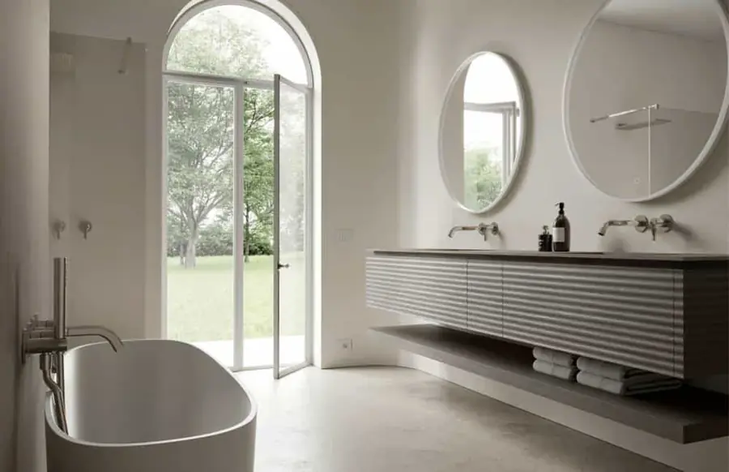
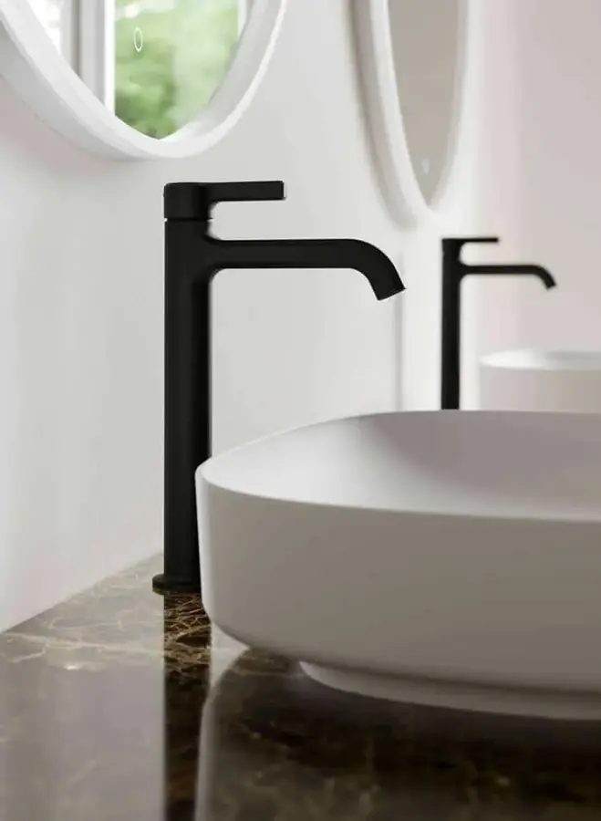
GriferíasAurelia grifería para baño – Rubinetterie Treemme
Rubinetterie Treemme presenta “Aurelia”, la nueva colección de grifería creada por el diseñador industrial Danilo Fedeli. Una colección pensada para baños atemporales que rescata las líneas estéticas más clásicas ajustándolas a las proporciones y formas de vanguardia.
La sobriedad en su apariencia hace de esta colección una opción perfecta para cualquier baño y momento. Esta propuesta italiana se convierte en un objeto único y sofisticado que, además, gracias a los materiales que la componen, aporta luminosidad a la estancia.
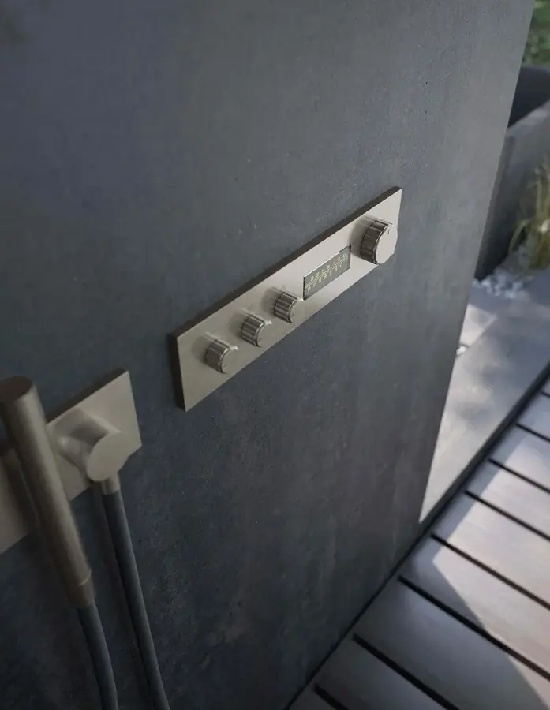
GriferíasGrifería para baño W-70 – Rubinetterie Treemme
Rubinetterie Treemme revoluciona el mercado de los termostáticos con su nueva gama de controles de ducha “W-70”. Una colección de grifería para baño de lo más innovadora, aunque con un punto retro que la hace todavía más especial.
Su estética vanguardista está a la par con las avanzadas funcionalidades que la caracterizan. Con una pantalla integrada en su sistema, W-70 permite controlar la temperatura del agua con precisión, adaptándola al detalle al gusto de cada usuario.
- Griferías
Grifería para baño WATT – Rubinetterie Treemme
Descubre la fusión perfecta entre agua y luz con la nueva colección de grifería para baño WATT. Creada por el italiano Marco Baldini para convertir tu baño en un oasis de relajación.
Inspirada en el mundo de la electricidad, esta colección te transporta a otra era, sin renunciar a la funcionalidad, la más alta tecnología y el diseño más moderno. Un nuevo concepto de mezcladores termostáticos y mezcladores empotrados que emiten agua a la vez que iluminan.
- Griferías
Griferia para baño Madison – Dornbracht
Elegancia atemporal y máxima calidad: Madison
La serie de griferías Madison combina la estética clásica con la tecnología más avanzada.
Con sus formas nostálgicas, una variedad de superficies elegantes y materiales de alta calidad, aporta estilo a cualquier baño.
Conozca la simbiosis perfecta de tradición e innovación con Madison, que impresiona por su durabilidad y sus acabados perfectos.
- Griferías
Ducha y griferia exterior Helm – Zucchetti
Sumérgete en una experiencia única al aire libre con la nueva ducha exterior Helm de Zucchetti. Diseñada por David López Quincoces, esta pieza destaca por su diseño minimalista y su estética industrial, perfecta para crear ambientes sofisticados y acogedores.
Fabricada con materiales de alta calidad, en acero inoxidable AISI 316L, es resistente y duradera, ideal para su uso en exteriores. Con Helm, la ducha es mucho más que un elemento decorativo, se convierte en un momento especial, una invitación a conectar con la naturaleza.
- Griferías
Grifo monomando de lavabo para empotrar – Grifería Rovira
Diseñado para ofrecer la máxima durabilidad y facilidad de instalación, este monomando de lavabo para empotrar de Rovira es la elección perfecta para cualquier proyecto.
Fabricado en una sola pieza, sin uniones que puedan provocar fugas, garantiza una estanqueidad total. Además, su innovador diseño permite ser instalado sin necesidad de haber elegido su acabado, dejando esta elección para el final del proceso decorativo.
Una opción eficiente a la par que innovadora que ayuda a reducir el consumo de agua, contribuyendo al ahorro y al cuidado del medio ambiente.
- Griferías
Grifería de diseño IMO – Dornbracht
La nueva propuesta de grifería IMO de Dornbracht destaca por su cuidado diseño y funcionalidad universal.
Adaptable a cualquier estilo de vida y espacio, la colección representa la evolución del baño como un espacio personal y funcional, reflejando los gustos particulares de cada cliente.
Gracias a su estética neutral, IMO permite distintas formas de expresión siempre manteniendo un estilo tendencioso y moderno, en equilibrio, que evoluciona a la vez que el momento en el que nos encontramos.
- Griferías
Ducha spa SERENITY SKY – Dornbracht
La nueva ducha spa SERENITY SKY de Dornbracht, diseñada por Sieger Design, convierte tu baño en un auténtico oasis de bienestar.
Disponible en dos modelos distintos, Serenity Sky+ y Serenity Sky, ambos ofrecen los tratamientos acuáticos de relajación más demandados para incluir en tu rutina diaria (Kneippe y Aquapression).
Su diseño minimalista y la precisión que garantiza su tecnología avanzada, se integra perfectamente en cualquier espacio, proporcionando una experiencia de spa regeneradora y relajante en tu hogar.
 Griferías
GriferíasGrifería ergonómica de lavabo Button - Rexa design
La nueva grifería ergonómica Button de Rexa Design se inspira en el diseño de los mandos de los equipos de música para dar forma a todos sus modelos.
Fabricada en acero inoxidable satinado o Black Luxury, la colección ofrece 12 acabados Corian® distintos con los que poder crear ambientes monomateriales y explorar combinaciones cromáticas únicas.
Con diseños y adaptaciones para lavabos, bidés, bañeras y zonas de ducha, toda su gama asegura un baño estéticamente armonioso con diversas configuraciones disponibles para ajustarse a las necesidades más personales.
 Griferías
GriferíasGrifería ergonómica de lavabo Button - Rexa design
La nueva grifería ergonómica Button de Rexa Design se inspira en el diseño de los mandos de los equipos de música para dar forma a todos sus modelos.
Fabricada en acero inoxidable satinado o Black Luxury, la colección ofrece 12 acabados Corian® distintos con los que poder crear ambientes monomateriales y explorar combinaciones cromáticas únicas.
Con diseños y adaptaciones para lavabos, bidés, bañeras y zonas de ducha, toda su gama asegura un baño estéticamente armonioso con diversas configuraciones disponibles para ajustarse a las necesidades más personales.
- Griferías
Grifería de baños Sablier - Zucchetti
La nueva colección para baños Sablier de Zucchetti, redefine la grifería con un diseño fluido y elegante, de formas curvas inspiradas en la forma de un reloj de arena.
Diseñada por Mónica Armani, la colección hecha en acero inoxidable, ofrece una experiencia táctil única con acabados cepillados y arenados que resaltan su sofisticación.
Los detalles redondeados evocan la naturalidad de los guijarros de río, combinando estética contemporánea y funcionalidad. Sablier es una fusión de vanguardia, comodidad y consciencia ambiental, creando una experiencia de uso distintiva y placentera.
- Griferías
Grifería de diseño Dedal - Sanycces
Sanycces presenta su nueva colección de grifería “Dedal”. Diseñada por el reconocido diseñador industrial José Manuel Ferrero, se inspira en el mundo de la costura adoptando sus formas más características.
Con un cuerpo ligeramente cónico y recto, Dedal destaca por su versatilidad y adaptación a distintos espacios. Disponible en acabados Chrome, Brushed rose gold, Black mat y Raw metal, esta colección homenajea la artesanía con texturas únicas.
Dedal combina estética y funcionalidad, ofreciendo una elegancia distintiva a cualquier baño desde la sencillez de sus detalles.
- Griferías
Grifería Pan S - Zucchetti
La colección bestseller en grifería de Zucchetti “Pan S” renueva su diseño 20 años después con una diseño más esbelto y contemporáneo, destacando su fluidez sin cortes ni injertos.
Su estética conecta directamente con las formas orgánicas del medioambiente. Inspirada en la naturaleza, presenta una nueva versión de tres orificios junto con el monomando clásico.
Las nuevas tonalidades exclusivas como tiza, polvo, chile, salvia y mirto, se combinan con los elegantes acabados chocolate, oro británico y PVD total black.
- Griferías
Griferia Octo - Zucchetti
Descubre Octo de David López Quincoces, una síntesis de innovación y tecnología de vanguardia con la que el diseñador no ha tenido miedo a experimentar para dar con la solución más exclusiva en grifería.
Su diseño cuidado hasta el más mínimo detalle combina formas redondeados y estructuras lineales, creando un perfil plano y definido en las formas del caño y de la palanca.
El enfoque en las proporciones se traduce en un juego de equilibrio y proporciones, dando como fruto un diseño inspirador para baños.
- Griferías
Grifería de bañera y ducha termostática Hoop - Zucchetti
Zucchetti innova con Hoop, el novedoso sistema de ducha con pulsador diseñado por Matteo Thun y Antonio Rodríguez.
Disponible para bañera y para ducha, el modelo permite varias configuraciones: desde una salida de agua hasta cuatro. Esta versatilidad en su diseño ofrece una inmensa libertad facilitando su instalación, tanto horizontal como vertical, y garantizando el perfecto acople en todo tipo de baños.
Gracias a la estética minimalista que define a la colección, Hoop se convierte en la pieza perfecta para combinar con el resto de elementos de la estancia.
- Griferías
Ducha Exterior Outdoor - Zucchetti
Zucchetti consigue romper la barrera entre interior y exterior con su nueva línea de duchas exteriores.
Toda una revolución en interiorismo y diseño que apuesta por romper las barreras físicas y unificar espacios. Con objetivo en ganar conexión y amplitud, sus duchas outdoor te acercan a la libertad y a las sensaciones del exterior.
En acabados metalizados, con opciones en plateado, dorado y negro, la colección diseñada en acero inoxidable asegura un buen mantenimiento y durabilidad, a la vez que llena de sofisticación y elegancia a toda ubicación en la que se encuentre.
- Griferías
Grifería estilo británico Guild - Burlington
Burlington, la destacada firma británica, se especializa en la fabricación de artículos para baños de inspiración clásica y estilo británico.
Reconocida mundialmente por su artesanía excepcional, la marca destaca por la elegancia de sus productos con un estilo brillante, ligero y simplista. Mediante una combinación experta de estilo clásico y características contemporáneas, Burlington lanza su amplia colección de grifería para baño, “Guild”.
Además de esta colección, la marca es experta en crear soluciones de baño atemporales. Cada artículo refleja la calidad y el diseño distintivos que caracterizan a Burlington, consolidándola como líder en el mercado de productos para baños.
- Griferías
Flexo Designflex – Hansgrohe
El nuevo flexo de Hansgrohe brinda una experiencia de bienestar incomparable. Hecho a partir de material impermeable, su composición en plástico PET reciclado le convierte en el cómplice perfecto para cualquier modelo de la marca con los acabados FinishPlus.
Su aspecto trenzado y suave textura convierten a este accesorio en un elemento de alto confort. Este enfoque innovador en el diseño no solo resalta su atemporalidad, sino que también subraya su compromiso con la durabilidad y la practicidad en el día a día.